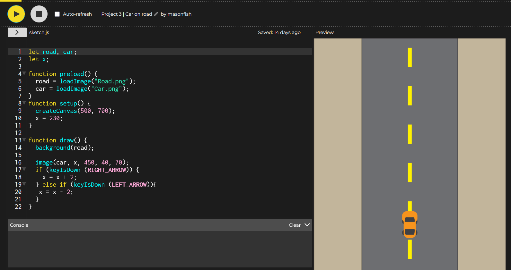
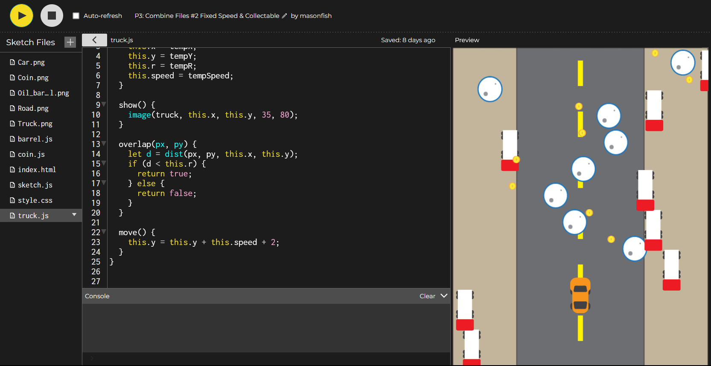
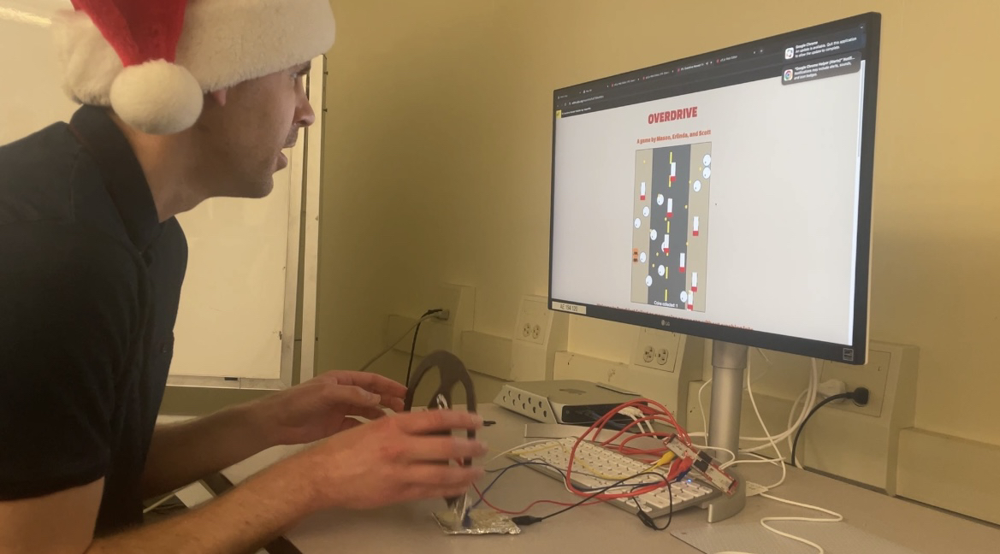

When we first started brainstorming, we decided to make a game
inspired by the 1999 SEGA game "Crazy Taxi." The first step was
creating the base game, which included making a car drive back and
forth. We still weren't sure how to implement the MakeyMakey in an
interesting way.

One challenge we were able to eventually figure out was getting the
coins, trucks, and barrels to spawn and fall at different rates. After
getting the base of the game working, we just needed to add music and
sound effects, and then implement the MakeyMakey.


We had some playtesters try out our game, and a big thing we needed to
work on was making sure the game wasn't too hard. Even with this
issue, we had a playtester manage to win the utlimate high score of 11
coins!